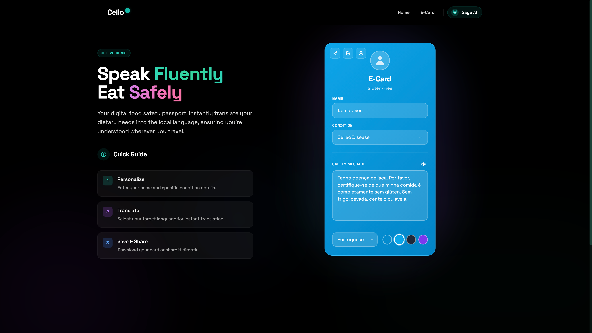

B2C App | User Research Deep Dive
Celio
Mitigating traveler anxiety through hypothesis driven design, technical persistence (Alpine.js), and crucial offline audio accessibility.
Read Case Study →

 (1).png)